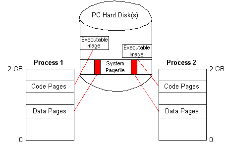
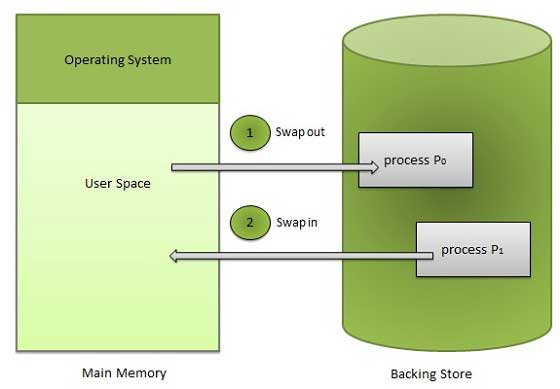
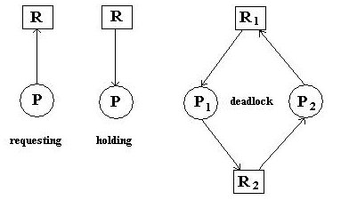

It refers to a complex system software which manages:
A program becomes a process at the moment it enters into the CPU.
This is a program. It it composed of instructions:
We use to compute the average waiting time for the processes and the average turnarround time (the turnarround time is the sum for each process of the waiting time and the execution time).
Turnaround = Process's CPU burst time (duration of each process spend inside the CPU) + process's waiting time.Ready queue contains future tasks. Each needs the CPU for a little time. One after the other, they hold the CPU for that time.
The FCFS is the simplest (not an efficient) CpuSA. In this algorithm, the CPU invites each process according to its arrival time. The process found in the front position in the "ready queue" will be invited for execution first. Each process is executed in a sequential order. Even CPU can no preempt (force to exit) any process befor it's allocated CPU's burst time is over. Each process will stay inside the CPU until it's CPU allocated burst time is over.
The SJF is an algorithm in wich the job with the shortest needed time will be invited first, the other ones will be delayed. It can become non-preemptive (once a task began, the CPU can't ask it to leave) or preemptive (giving more power to the CPU). If preemptive, the CPU can ask for a task not to be delayed infinitely if longer than any other (well, actually there are enough idle time in the CPU for that not to happen often). This algorithm provides better performance than FCFS.
To do all that, some computations are needed (to look at the length of the tasks and to compare them). That is not negligible but performances are still better than FCFS.
In this algorithm, each process enters with a priority number (between 0 and 4095) given by the OS. Some may consider the lowest numbers as the ones with the lowest priority. In our examples, 0 means the highest priority. It provides better performance than FCFS and SJF.
This algorithm has a great problem: process starvation. Low priority processes may wait forever because this algorithm is most of the time preemptive. The solution to that is to use an "aging technique": for example each time (time decided beforehand) the process waits, its priority is decremented (or incremented).
If two processes have the same priority number, then the one that entered the queue first is computed first.
In this algorithm, a timeout is decided beforehand and no process can stay in the CPU longer than this timeout. If it needs less time, it ends. Otherwise its needed time decreases (obviously) and it goes back to the end of the waiting queue.
It is one of the most efficient algorithm and uses the concept of "time slice" giving each process an equal time. Each processes are invited in a sequential order. No process is allowed to overstay in the CPU, at the moment the allocated time-slice expires, the process *must exit* and return to the end of the waiting queue.
A page, memory page or virtual page is a fixed-length contiguous block of virtual memory, and it is the smallest unit of data for the following:
The user-area in RAM is sub-divided into equal-sized small partitions. Each partition is called frame. Each frame can hold only one page at a time.
It is a software. It is a component of an OS. It handles the processes. It does the job of "swap-in" and "swap-out" the processes to and from RAM and the backing-store.
It is a software. It is a component of an OS. It handles pages. It does the job of transfering the "pages" to and from RAM and the backing-store.
It refers to a HD, an external storage.
It is an activity. Whenever the CPU needs a process, the needed process will be "swapped-in" (transferred) from the backing-store to the RAM.
It is an activity. Whenever the CPU does not need a process, the unwanted process will be "swapped-out" (transferred) from the RAM to the backing-store.
The dynamic memory allocation suffers from a problem called "External fragmentation".
In som situations even though the total of all the free holeareas is bigger than the size of the needy process [PI], the free hole area cannot be used by the needy process. The reason is the free hole areas are not found at one location. They are found at different location in RAM.
Solution: Compaction
All the free hole areas are merged together to make a big free hole area. So that the big free hole area can be used to accomodate any needy process.
Pifferences between two size of memory partition and two size of a needy process. There is no solution to solve the problem. In the fixed memory partition, the free space areas can not be merged and reused.

When a page is already present in a frame in RAM, the system does not lose time loading it, the computation is faster. This is called "page hit". If the page is not present in memory, the CPU has to load it, it is called "page fault".
The list of page calls is named the page-reference string. It's a set of page numbers.
In the FIFO algorithm, pages are placed in frames as long as there are frames available. If all frames are occupied, and there is a page fault, then the older page pops out of it's frame and the needed page takes its place.
This is a simple page-replacement algorithm. The CPU pages out the page which was brought into RAM first. It is not an efficient page-replacement algorithm because is causes too many page-fault events.
The LRU is one of the most efficient page-replacement algorithms. It is an efficient algorithm as it causes a minimum number of page faults events.
In this algorithm, the CPU pages-out the page, which has not been referenced [used] for the longest period of time.
Belady si an OS expert. She discovered that the number of page faults that each page replacement algorithm produces highly depends of the number of frames found inside RAM. She also found that when the number of frames goes up, the number of page faults goes down.
However, the OS experts discovered later that only the FIFO algorithm caused more page faults when the number of frames inside the RAM decreases.
Each OS use one of the strategies. In the first-fit strategy, the CPU will start it's searching from the first free-hole found inside the RAM. The CPU stops its searching operation at the moment it finds the first free hole area which can accomodate the needy process.
If the size of the needy process p1 is 70kB, the CPU will move it into the firt suitable freehole area.
It is the best strategy among the 3 strategies. In this strategy, the CPU searches the entire free hole list in order to find the smallest free hole which can accomodate the needy process.
The CPU stops is's searching operation at the moment it finds the stmallest free hole which can accomodate the needy process. So the CPU will move the needy process into the free hole area which proposes the smallest memory wastage.
No OS uses this strategy, because in this trategy, the CPU searches the entire free hole list in order to find the biggest free hole area which can accomodate the needy process. The CPU stops it's searching operation, at the moment it finds the biggest free hole to accomodate the needy process. So the CPU will move the needy process into the free hole which proposes the biggest memory wastage.
A Deadlocks is an unexpected event that occurs on our computer system when the process P1 needs a resource R1 which is currently being used by the process P2 while the process P2 badly needs the ressource R2 which is currently being used by the process P1. Both P1 and P2 process enters a long waiting state that is called "Deadlock".
Four deadlocks conditions:
This is one of the deadlocks conditions. This situation (deadlock event) happends when there are n number of processes and m number of resources.
For example, the process P1 badly needs the resource R1 which is currently used by the process P2 while the process P1 badly needs the resource r2 which is currently used by the process P3 while the process P3 badly needs the resource R3 which is currently used by the process Pn while the process Pn Badly needs the resource Rn which is currently used by the process P1.
It is one of the deadlock conditions. This situation (deadlock event) occurs when the process P1, currently holding the resource waits to obtain (get) another resource which is currently used by the process P2.
So the process P1 must wait until the resource is released by the process P2.
In the FIFO CPU Scheduling algorithm, each process has the privilege to hold the CPU until its allocated CPU's burst time is expired. Even the CPU can not ask any process to exit/leave before process' CPU's burst time is expired. This situation is called "No preemption condition".
This situation (deadlock event) occurs when there is a non-sharable sesource. For example, the resource is currently used by the process P1. These processes must wait in the ready-queue until the resource printer is released by the process P1.
Four main Scheduling Algorithms:
Each OS uses one of the DSA. Each algorithm has its own strength and weakness.
The FCFS is not an efficient disk scheduling algorithm. It produces more read/write head movements. In this algorithm, the CPU gives services to the requests in a sequential order.
The SSTF is not an efficient disk scheduling algorithm. It produces more read/write head movements. In this algorithm, the CPU always gives services to the requests which is very near/close to the current read/write head position. The read/write head moves to the request which is very near/close to it's current positon.